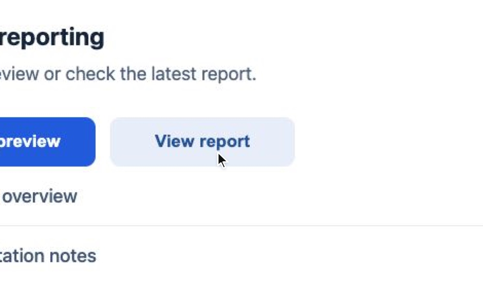
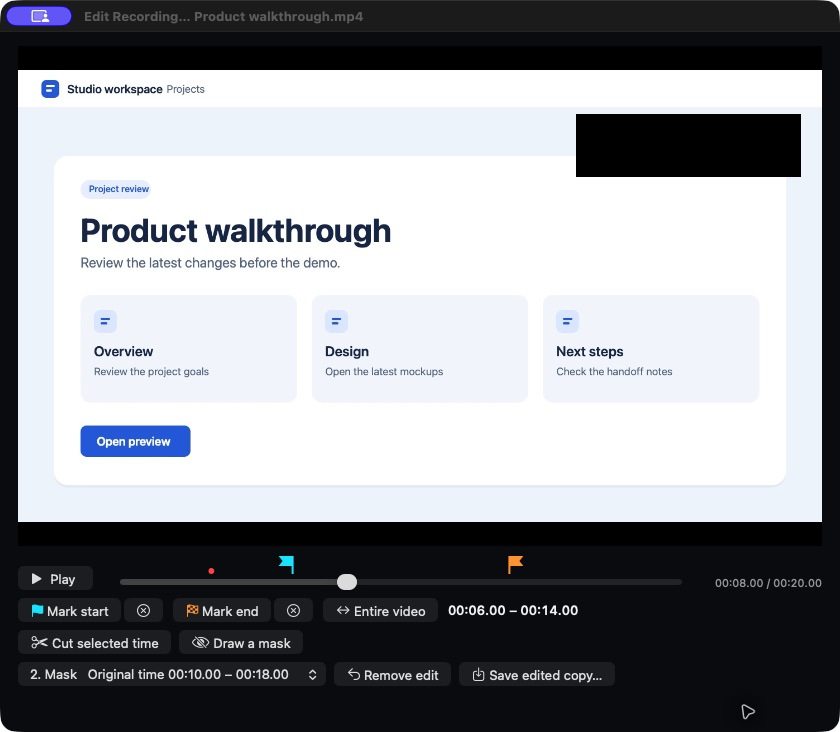

Foco en el puntero
Un círculo suave sigue al puntero, incluso entre clics.
Graba el micrófono y el audio del sistema mientras resaltas el cursor, los clics y el arrastre. Guarda la grabación con los efectos incluidos. Ahora también puedes superponer la imagen de tu cámara.
No necesitas comprar la app de iOS. Pruébala 7 días sin tarjeta.
macOS 15 o posterior · Apple silicon e Intel
Un círculo suave sigue al puntero, incluso entre clics.
Cada clic izquierdo y derecho se ve al instante.
Al arrastrar se dibuja una línea que se desvanece desde su extremo más antiguo.
Configura los efectos de los clics izquierdo y derecho por separado. Puedes desactivar el efecto de cualquiera de los botones.
Cambia los ajustes y luego haz clic, clic derecho o arrastra en la pantalla.
Deja el puntero quieto y mantén pulsado el botón izquierdo durante medio segundo para ampliar la zona que lo rodea. Haz clic derecho para volver al tamaño normal.
Activa el zoom en Efectos o desde la barra de menús y elige 1,5×, 2×, 2,5×, 3× o 4×. La primera vez, sigue las indicaciones para conceder permisos de grabación de pantalla y accesibilidad.


Ayuda a que se vea dónde señala y hace clic Claude durante una demostración en el navegador.
Instalar desde Chrome Web Store
Sustituye el cursor naranja de Claude por una flecha negra con borde blanco. También se ocultan el bocadillo del cursor y el anillo de clic.
 Ampliar imagen
Ampliar imagen
Desactiva el brillo naranja con un interruptor independiente. El indicador de actividad y el botón para detener a Claude siguen disponibles.
 Ampliar imagen
Ampliar imagen
Necesitas Claude in Chrome. Abre la página de la demostración y usa la extensión en la barra de herramientas de Chrome para activar las opciones que quieras aplicar a esa página.
 Ampliar imagen
Ampliar imagen
Graba toda la pantalla, una ventana o la zona que delimites al arrastrar.
Elige el micrófono y comprueba su nivel de entrada antes de grabar. Activa el audio del sistema para incluir lo que suena en las apps y el navegador del Mac.
Elige Full HD, 4K o la resolución original, a 30 o 60 fotogramas por segundo. La grabación se guarda como MP4 en la carpeta que elijas.
Configura una cuenta atrás de 3, 5 o 10 segundos, atajos de inicio y fin y un temporizador de parada automática. Pausa o reanuda desde el indicador de grabación, que puedes mover. El tiempo en pausa queda fuera del vídeo.
Elige una cámara integrada o externa y revisa la imagen en la vista previa ampliada. Ajusta la posición y el tamaño y elige un rectángulo horizontal, círculo, rectángulo vertical, corazón o estrella. También puedes difuminar el fondo.
La calidad de la grabación depende de la resolución de origen.
Abre un vídeo en el editor de grabaciones y guarda el resultado como un MP4 independiente.
Añade o quita por separado las marcas de inicio y fin de la línea de tiempo. Después de recortar, se actualiza la duración y puedes reproducir el resultado enseguida.
Cubre con un rectángulo negro los datos personales o las notificaciones. Elige dónde aparece y durante qué intervalo del vídeo.

Ampliar imagenActiva «Incluir cámara» en los ajustes de grabación. En «Ajustar cámara…» puedes elegir la cámara y ajustar la posición y el tamaño de la imagen. Permite el acceso a la cámara cuando macOS te lo pida.
Sí. La grabación incluye el micrófono seleccionado. Activa el audio del sistema para incluir lo que suena en el Mac. Cierra las aplicaciones que emitan sonidos ajenos a la demostración.
Comprueba el micrófono seleccionado y el ajuste de audio del sistema. En Privacidad y seguridad de macOS, revisa los permisos de micrófono y de grabación de pantalla y audio del sistema para Tap Pointer. Graba y reproduce una prueba corta.
Sí. Usa el resaltado del cursor y los efectos de clic en directo mientras presentas. Si grabas con Tap Pointer, los efectos también quedan guardados en el MP4.
Prueba todas las funciones durante 7 días. Después, puedes suscribirte por 1,49 USD al mes, impuestos incluidos.
Si ya activaste la app de Mac desde iOS, puedes seguir usando la última versión gratis.
Guía de instalación para Mac
Consulta el estado del acceso y de la compra, abre la página oficial de compra o gestiona la suscripción desde la app. Muestra el código de recuperación y úsalo para restaurar la suscripción en otro Mac.
Comprueba si hay una nueva versión en los ajustes o la barra de menús y abre la página oficial de descarga. Permite las notificaciones de macOS para recibir avisos de actualización.
Usa el idioma del Mac o elige entre siete idiomas. También puedes copiar el correo de soporte y configurar los informes de fallos desde la app.